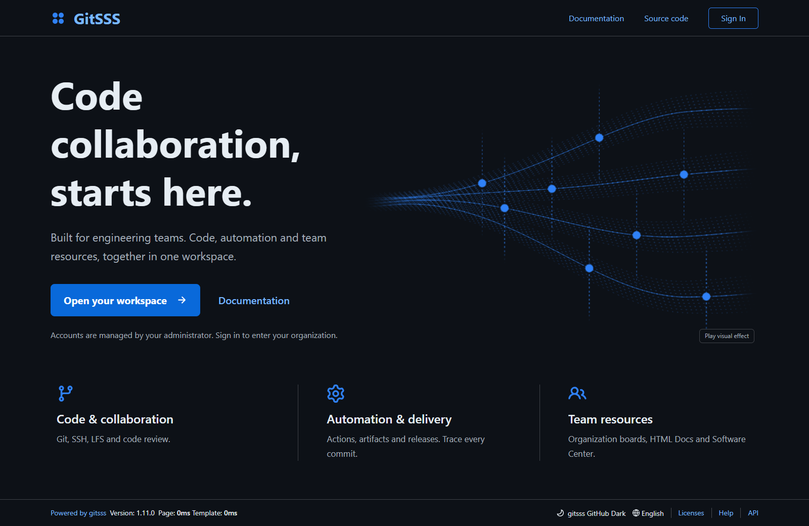

企业内网与组织
GitSSS 服务于企业研发。新安装默认绑定 0.0.0.0:5030，关闭自主注册并要求登录，显式已有设置优先。
组织首页
首页列出当前用户有权访问的组织；选择组织后进入组织仓库与权限组。个人工作台保留在 /?view=personal。
权限组显示名称
权限组设置可修改显示名称（包括 Owners），API 字段为 display_name。清空后显示原名称。稳定 ID、name、lower_name、URL 与授权不变；显示名称只用于备注。扩展使用独立的 gitsss_schema_version，保留上游数据库版本 343 与原始数据，不移动任何 Git/LFS 文件。
并行迁移与回退
先保留 Gitea 3000 与 GitSSS 5030。试运行关闭内置 Runner 与定时任务，不连接生产 Runner；正式切换等待管理员通知。仅 HTTP 导入不能保留密码、SSH/API/Runner 凭据、Actions 历史与 Webhook 状态，使用这些功能的源站必须在最终窗口执行原生数据库与数据接管。两套服务不能共用可写数据库或仓库。
升级前备份数据库。1.26 基线的旧 GitSSS 无法读取 343 数据库，回退必须同时恢复旧二进制和升级前数据库备份。详细命令与边界见 企业运维说明。
原生兼容与运维
已合并 Gitea 1.27.1 的 Actions attempt、可复用工作流、任务摘要、团队可见性与分支保护。历史 GitSSS 332 中被占用的上游迁移会自动修复；扩展不再占用上游编号。
程序内置 /help/ 离线 HTML 说明书，默认英文。tools/rehearse-native.py 在独立 SQLite 副本比较所有原始表与列，不复制 Git/LFS，也不启动服务器。tools/verify-git.py 验证真实 Git、LFS、权限与 SSH；Actions 验证只在独立实例运行。tools/agent-ops.py 读取健康和任务状态，dispatch/rerun 需要 --apply。原生 JS Actions 需要 Git、Git LFS、Node.js。
2026-10-16 验证记录
独立数据库快照迁移保留全部 116 张原始表、列与记录 ID（343 → 343），耗时约 1.35 秒；原管理员 Token、组织与权限组可见性、4 个试点仓库、Runner ID 和 Actions 历史 API 均通过。4 个试点匹配 135 个源 refs。真实客户端验证覆盖 HTTP/SSH、LFS、权限、PR 合并和权限组备注；独立 Runner 通过 checkout、shell 与 artifact 上传。增量测试覆盖新增提交与 LFS、源分支删除、目标独立变更拒绝覆盖，以及无变化重跑缓存不增长。生产 Runner 和原 SSH 凭据的实际接管仍在最终窗口验收。
Windows 本地导入与恢复使用规范 file: URL；原绝对路径及本地导入权限检查保持有效，不移动存储。
操作系统 SSH 与 Git SSH
服务器的操作系统 SSH 账号、密码与 22 端口保持不变，与 GitSSS 默认 2222 的 Git SSH 监听独立。客户端连续提交多把 Agent 密钥可能耗尽单条连接的认证次数；密码登录可为该连接指定 PreferredAuthentications=password 与 PubkeyAuthentication=no，无需修改服务器策略或账号密码。
语言自动识别与清晰文字
默认根据浏览器传递的系统语言偏好自动选择界面语言，登录不会将自动识别结果永久保存为英文。页脚和“设置 → 外观”可选择自动或指定语言；已有明确语言偏好的账户可改回自动。页面 lang 与自定义 React 界面同步更新；新增词条提供中英文，其他语言未覆盖词条回退英文。浅色、深色主题分别使用各自的菜单文字与背景色，导航栏白字不会再污染下拉菜单，辅助文字和 Worker 标签更清晰。
单个组织全局看板
点击组织导航的“组织全局看板”直接进入 /{org}/-/kanban，没有项目列表，也不需要创建仓库。待处理、进行中、已完成三列均可快速记任务，输入 @用户名 指派组织成员，拖动卡片或编辑状态。支持即时搜索、@指派人筛选、详细说明、编辑和删除。最多显示 500 条匹配卡片，超出时显示提示，可缩小范围后搜索存储中的任务。
仅组织成员与站点管理员可访问；受限访客除组织所有者外不可访问。成员可协作修改卡片，删除限创建者或组织所有者。指派人与所有增删改查均在服务端限定组织。仓库看板仍在 /{org}/{repo}/projects；旧组织项目 URL、字段及 Issue 关联保持兼容。新增卡片仅使用扩展版本 2 的 org_task 表，不创建 Git 仓库，不复制对象；回退旧扩展版本需恢复匹配的数据库备份。
桌面布局与内置头像
桌面主区域充分利用浏览器宽度，修复 Actions 搜索标签挤压、中文换行及主题对比度；个人设置表单保持适合阅读的宽度。移动端另行规划。设置 → 个人资料提供24 个现成 DiceBear Adventurer/Lorelei 头像，资源完全内置，无需外网；选择后复用现有头像处理与存储，也可上传图片，自动裁剪为方形、缩放并压缩，透明图片保持 PNG。新 GIF 上传使用首帧。作品由 Lisa Wischofsky 创作，Adventurer 为 CC BY 4.0，Lorelei 为 CC0，通过 DiceBear 10.6.0 本地渲染。新个人账号自动头像使用稳定的内置选择，已有头像和组织头像保留。
并行实例隔离
试运行必须使用独立 HOME/USERPROFILE、SSH_ROOT_PATH，并关闭 SSH_CREATE_AUTHORIZED_KEYS_FILE 与 SSH_CREATE_AUTHORIZED_PRINCIPALS_FILE。禁用 SSH 的实例也不得重写系统授权文件。验收前后比较原授权文件哈希，并验证原 Runner 密钥和真实仓库读取。并行实例还必须设置不同的 session COOKIE_NAME、security COOKIE_REMEMBER_NAME 与 i18n COOKIE_NAME，避免同一主机不同端口共享登录 Cookie；最终原生接管恢复原站配置与凭据。试运行新增看板应在最终窗口导出并迁入，未核对前不得覆盖。
统一组织工作台与搜索
动态、仓库、全局看板及团队管理使用同一组织页头和导航；顶部工单、合并请求、里程碑及看板保留当前组织。切换组织尽量保留当前栏目。组织和团队下拉框支持按显示名称与稳定名称搜索。动态页切换团队时就地更新活动和仓库，保留仓库搜索与筛选，支持浏览器前进、后退。失败时保留当前内容。看板的快速添加、编辑、删除和服务端搜索均在原页面完成，失败保留草稿；原表单及 URL 继续兼容。
首页组织超链接
独立“组织超链接”Tab 支持多个公共入口与个人入口，名称和 URL 均可修改，添加、编辑、删除后原页保存。公共入口限站点管理员配置，个人入口只归当前登录用户管理。每组最多 32 项，名称最多 120 字符，URL 最多 2048 字节，仅支持 HTTP/HTTPS，禁止夹带账号密码。点击在新标签页打开服务，保留当前工作台。保存失败保留草稿，其他页面已保存时提示冲突，避免静默覆盖。桌面首页左右仅留 16px。
配置保存在现有 app_state 的 enterprise-home-links 和 personal-home-links-{userID}，不修改数据库结构及 Git/LFS 存储。产品不预置私有地址；在企业部署后配置。最终接管前导出试运行新增入口并核对用户 ID，回退使用匹配数据库备份。POST /home-links 使用正常会话和 CSRF 保护；详细字段见企业运维 Markdown。
紧凑桌面与三栏动态
动态页左侧是仓库与筛选，中间是活动，右侧是 CI/CD 和已发布公告。贡献热图默认展开，可自行收起，组织超链接移到独立 Tab。默认界面字号 14px，页头和按钮收紧；成员以单行表格展示，头像为 28px。浏览器缩放由用户控制，不对页面做 transform 缩放。
团队自动分配
组织所有者进入“设置 → 团队自动分配”，用 Go/RE2 正则匹配仓库名称并选择多个团队。^server- 匹配前缀，-go$ 匹配后缀，(?i) 忽略大小写。可先预览已有仓库，再保存规则；为已有匹配仓库添加团队需要单独点击应用，重复应用不会重复授权。
启用的规则在新建、API、派生、模板生成、导入及转入组织时自动生效，多条规则取并集，权限沿用现有团队配置。修改备注名称不影响规则；停用、删除规则或重命名仓库不移除既有授权。删除团队会清理规则引用，新同名团队不会继承。Owners 与全部仓库团队沿用原默认权限。最多 32 条规则、每条正则 512 字节、64 个团队；跨组织团队、无效正则、非所有者操作及跨站写入均拒绝。并发编辑使用版本检查。
配置使用现有 app_state 的 org-repo-team-rules-{orgID}，无数据库结构或 Git/LFS 路径变更。最终接管前导出规则并核对组织与团队 ID；旧二进制忽略规则但保留已授权仓库。详见 企业运维说明。

统一桌面界面与组织备注
组织同时显示稳定英文标识和不同的 full_name 备注，首页和组织切换器都能查看；首页支持按二者搜索，Escape 清空，无匹配时明确提示。备注在组织设置修改，不改变组织 ID、仓库路径、克隆地址和团队权限。试运行备注在接管前按组织名称导出和映射。
仓库代码、文件、工单、合并请求、Actions、看板、百科、发布和设置统一使用完整页面及导航，不再挂载额外的 API 界面层，也没有经典/新版切换。原 URL 和 classic=1 参数仍可访问同一页面，API 身份与权限要求保持不变。1200px 起显示可收起、可滚动的桌面导航，图标模式保留可访问名称。后台正文和表单为 14px，分组至少 13px、标题 16px，通过间距保持紧凑。回退替换旧二进制及其内置资源，不移动 Git/LFS 或数据库。
后台默认展开当前导航分组，其余分组可点击展开，导航栏独立滚动，不再把整页拉长。

生产接管与贡献热图
收到管理员明确切换指令后，停止两套写入者并备份原配置、密钥、数据库和二进制。原生接管保留账号密码、权限和存储路径，试运行新增数据按稳定名称映射；不覆盖原 runtime-state。保留 SSH 强制命令和 Hook 使用的可执行路径，原端口 22、系统账号及 Host Key 不变。生产独占原数据库后沿用原 Git 公钥管理方式，支持继续新增和删除密钥。单一服务监听 3000，可附加 5030；旧服务禁用启动，原活跃外部 Runner 恢复，保留回退备份。
贡献热图默认展开，切换团队同步更新热图并取消过期请求；窄桌面列可横向滚动日历，错误使用当前语言显示。管理后台区分数据盘总容量、全盘已用/可用与实测 Git/LFS 文件字节，分类中文显示，并标明测量时间、扫描截断和读取失败。仓库估算可能重复计算共享 LFS。无存储布局、对象字节或 API 字段变更。
原生二进制安装需在 GitSSS 服务 PATH 提供 Node.js 24。内置 setup-node 在 Linux、macOS 和 Windows 保留真实运行时目录，不自动下载或修改系统运行时。可用独立目录让 GitSSS 与原外部 Runner 使用不同 Node.js 版本。
管理后台正文、侧栏和表格使用 15px，说明和按钮使用 14px，分节标题使用 17px；240px 侧栏独立滚动，磁盘汇总横向四栏，兼顾清晰与紧凑。
新增按风格分组的动漫、原创幻想冒险、用户名文字头像与邮箱修改，详见 协作功能手册。
全局搜索与日期时间
Ctrl+K（Mac 为 ⌘K）从任意已登录页面打开全局搜索。仓库、工单、合并请求、组织及当前工作区入口遵守现有可见权限；方向键和 Enter 选择，Esc 关闭，Tab 正常移动。输入 200ms 防抖并取消过期请求，结果不写入本地存储。日期与时间控件使用本地打包 Flatpickr，按界面语言、主题显示，支持键盘、月份年份、今天/现在和可选清空；原有 ISO 表单字段与本地时区时间戳不变。详见 交互与兼容性说明。
登录与账号关联
默认保留密码登录，Google、飞书和微信作为可配置认证源。安全设置支持独立绑定、验证新身份后换绑，防止身份抢占或移除最后一种登录方式；Google 只把供应方明确验证且未被占用的邮箱添加为别名，不覆盖手填主邮箱。旧 OpenID 和无密码通行密钥入口从标准界面移除，现有记录保留。需要管理员配置真实应用与回调白名单后才能进行实际授权。详见 企业身份接入与兼容性说明。
GitSSS 首页与代码阅读
未登录首页使用独立的 GitSSS 设计与本地 Paper Shaders 引擎。单画布最多 300,000 像素，弱动态偏好、手动暂停、离屏及后台停止，WebGL 不可用时显示静态分支图。登录后组织优先，侧栏同时提供当前用户名（个人）入口。代码、diff、blame 和编辑器采用 IDEA/Rider 方向的语义配色，普通注释和文档注释统一为灰色，明暗主题分别校准。

离线说明书同时内置链接的功能契约与验收说明，无需联网；不开放运行源码。